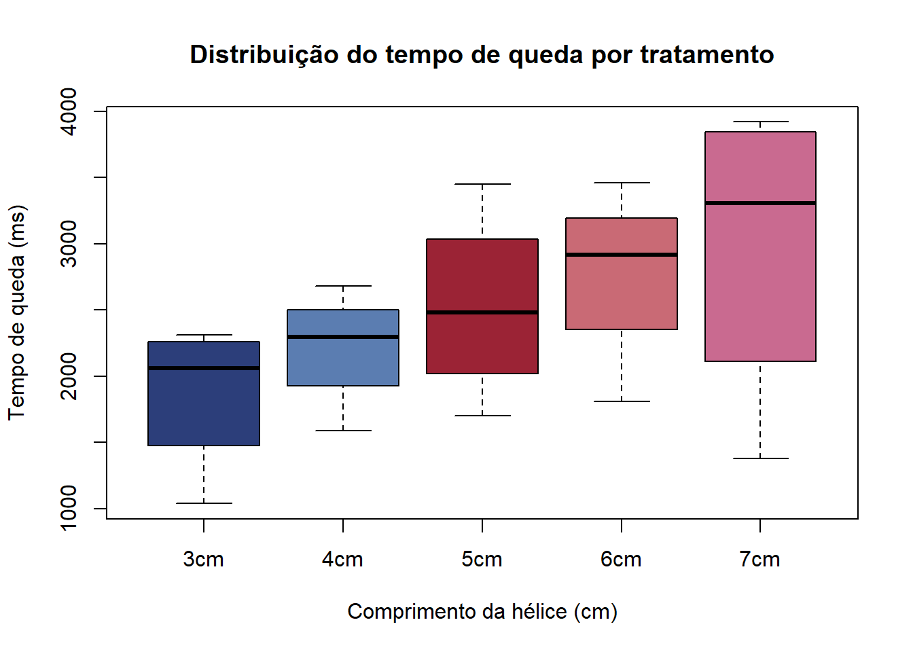
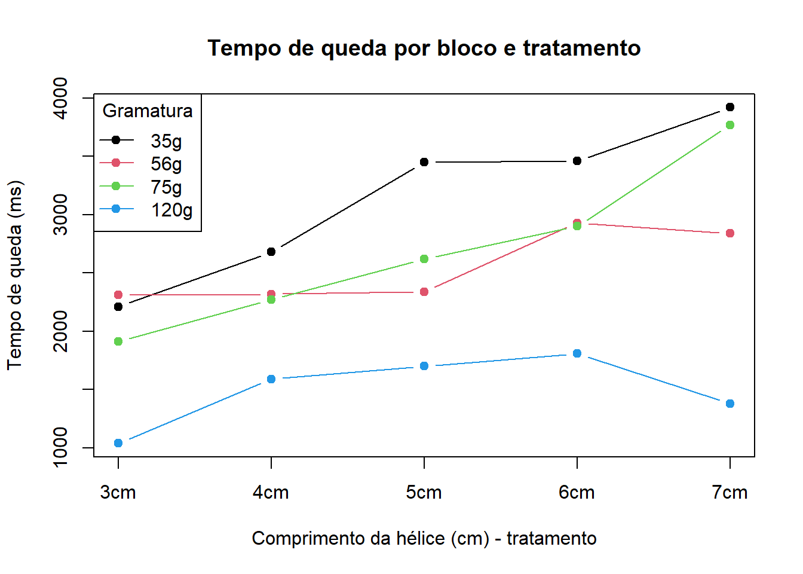
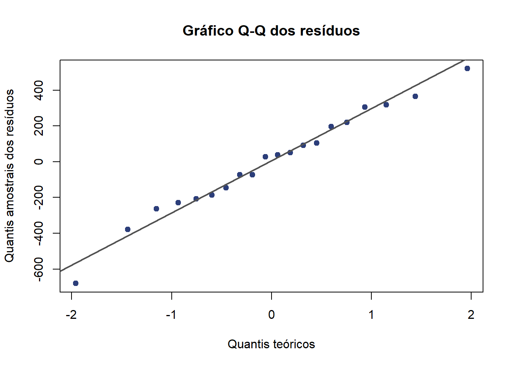
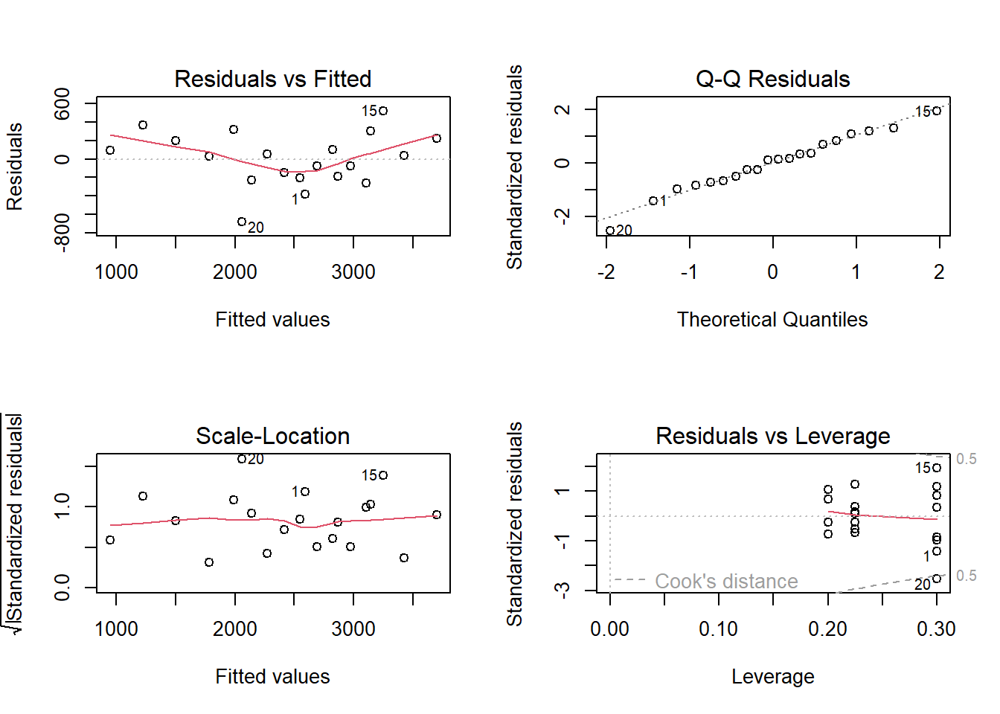

| 3cm | 4cm | 5cm | 6cm | 7cm | |
|---|---|---|---|---|---|
| 35g | 2210 | 2680 | 3450 | 3460 | 3920 |
| 56g | 2310 | 2320 | 2340 | 2930 | 2840 |
| 75g | 1910 | 2270 | 2620 | 2900 | 3770 |
| 120g | 1040 | 1590 | 1700 | 1810 | 1380 |
Batalha dos Helicópteros 🚁
1 Resumo
Este trabalho investigou o efeito do comprimento da hélice no tempo de queda de helicópteros de papel por meio da utilização de um delineamento em blocos completos inteiramente casualizados com cinco tratamentos (3, 4, 5, 6 e 7cm de comprimento de hélice) e quatro blocos definidos pela gramatura do papel (35, 56, 75 e 120 g/m²). A ANOVA indicou efeito significativo do comprimento da hélice e da gramatura sobre o tempo de queda. Os testes post-hoc e o modelo de regressão linear ajustado confirmaram que hélices maiores resultam em também maiores tempos de queda, com aumento estimado de 278ms por centímetro adicional. Os pressupostos do modelo foram atendidos, com dois tempos identificados como pontos influentes de um total de vinte observações.
2 Introdução
Com motivação baseada na curiosidade em observar o comportamento de helicópteros de papel em queda livre, o objetivo desse experimento foi avaliar se o comprimento da hélice do helicóptero de papel influencia no seu tempo de queda. Porém, há uma fonte conhecida de variabilidade que pode influenciar no resultado: a gramatura do papel utilizada na execução dos helicópteros. Assim, foi necessária a utilização de um delineamento em blocos inteiramente casualizados (BIC).
3 Materiais e Métodos
Para a realização do experimento foram utilizados:
5 tiras de papel de tamanho 3cm x 15cm com gramatura 35g/m²
5 tiras de papel de tamanho 3cm x 15cm com gramatura 56g/m²
5 tiras de papel de tamanho 3cm x 15cm com gramatura 75g/m²
5 tiras de papel de tamanho 3cm x 15cm com gramatura 120g/m²
Lápis
Régua
Tesoura
Cronômetro
Escada doméstica
3.1 Realização do experimento
A fim de manter o controle local, uma mesma pessoa conduziu a queda de todos os helicópteros, da mesma forma e de uma mesma altura fixa, sendo inclusive a única a cronometrar o tempo de queda.
Não só isso, o experimento foi realizado em local fechado e idêntico para todos os lançamentos, num mesmo momento de um mesmo dia, sendo ele amplo o suficiente para que os helicópteros não tocassem outras superfícies que não o chão. A escolha da utilização de uma escada justifica-se pela tentativa de aumentar o tempo de queda de todos os helicópteros dado uma altura considerável para evitar imprecisões de marcação de tempo.
3.2 Escolha dos níveis do fator
Fator de tratamento: comprimento da hélice
Níveis: 3cm, 4cm, 5cm, 6cm, 7cm
3.3 Delineamento utilizado
Foi adotado o delineamento em blocos completos inteiramente casualizados, uma vez que o fator de interesse é o comprimento da hélice do helicóptero (tratamento), e há uma fonte conhecida de variabilidade, a gramatura do papel utilizado, que pode influenciar no tempo de queda. Dessa forma, a gramatura dos papéis foi considerada como bloco, permitindo controlar essa variabilidade (controle local) e aumentar a precisão na comparação entre os tratamentos.
3.4 Métodos de casualização
Foi realizado um sorteio para determinar a ordem dos blocos (definindo qual a gramatura de papel inicial, seguida das demais) e outro para estabelecer a ordem de aplicação dos tratamentos dentro de cada bloco (definindo a sequência de lançamento dos 5 helicópteros de hélices de tamanhos diferentes para cada gramatura de papel).
3.5 Constituíção da unidade experimental
A unidade experimental foi constituída por um helicóptero de papel individual, feito a partir de uma folha de papel 3cm x 15cm de gramatura específica e com um comprimento de hélice previamente definido. Cada helicóptero recebeu apenas um tratamento e foi submetido a um único lançamento para a obtenção da variável resposta.
3.6 Aplicação dos tratamentos
Os tratamentos foram aplicados durante a confecção dos helicópteros, por meio da variação do comprimento das hélices. Para isso, foram utilizados papéis 3 cm × 15 cm, sendo realizados cortes de modo a produzir helicópteros com comprimentos de hélice iguais a 3 cm, 4 cm, 5 cm, 6 cm e 7 cm, e mantendo constante as demais características da estrutura.
3.7 Condições de condução das unidades experimentais
Uma mesma pessoa realizou a confecção de todos os 20 helicópteros, de forma idêntica, desde o corte dos papéis até a utilização de um mesmo padrão de dobradura, garantindo a uniformidade do experimento.
3.8 Variável resposta medida
A variável resposta medida foi o tempo de queda do helicóptero, utilizando-se um cronômetro. O tempo foi tomado como a diferença entre o momento do primeiro toque do helicóptero no chão e o momento inicial em que o helicóptero se desprende da mão da pessoa que o segura. A unidade considerada para a análise foi milissegundos.
3.9 Tabela dos dados
3.10 Modelo utilizado
3.10.1 Delineamento em blocos completos inteiramente casualizados.
Para o experimento, foi utilizado o delineamento em blocos completos inteiramente casualizado (BIC) com cinco tratamentos e quatro blocos, pois há um fator de tratamento (comprimento da hélice) e uma fonte de variação que pode interferir no resultado mas que não deseja-se avaliar (gramatura do papel). Logo, o modelo matemático para o BIC é:
\[ Y_{ij} = \mu + \tau_i + \beta_j + \varepsilon_{ij} \] em que: \[ \begin{aligned} Y_{ij} & = \text{observação do tratamento } i \text{ no bloco } j \\ \mu & = \text{média geral} \\ \tau_i & = \text{efeito do tratamento } i \\ \beta_j & = \text{efeito do bloco } j \\ \varepsilon_{ij} & = \text{erro aleatório} \end{aligned} \] Com as seguintes suposições a serem satisfeitas: \[ \varepsilon_{ij} \sim N(0,\sigma^2) \]
\[ \sum_{i=1}^{t}\tau_i = 0 \] \[ \sum_{j=1}^{b}\beta_j = 0 \] Assim, são calculados os estimadores dos parâmetros como:
3.10.1.1 Média geral
\[ \hat{\mu} = \bar{Y}_{..} \]
(mu <- mean(as.matrix(tabela_dados)))[1] 2472.53.10.1.2 Efeito dos tratamentos
\[ \hat{\tau}_j = \bar{Y}_{i.} - \bar{Y}_{..} \]
media_individual <- colMeans(tabela_dados)
tal <- media_individual - mu
(estimativas <- data.frame(Tratamento = c("3cm","4cm","5cm","6cm", "7cm"),
Efeito_tratamento = round(tal,2),
row.names = NULL)) Tratamento Efeito_tratamento
1 3cm -605.0
2 4cm -257.5
3 5cm 55.0
4 6cm 302.5
5 7cm 505.03.10.1.3 Efeito dos blocos
\[ \hat{\beta}_j = \bar{Y}_{j.} - \bar{Y}_{..} \]
media_individual_b <- rowMeans(tabela_dados)
beta <- media_individual_b - mu
(estimativas_b <- data.frame(Bloco = c("35g","56g","75g","120g"),
Efeito_bloco = round(beta,2),
row.names = NULL)) Bloco Efeito_bloco
1 35g 671.5
2 56g 75.5
3 75g 221.5
4 120g -968.53.10.1.4 Cálculos dos componentes da ANOVA.
Utilizando a ANOVA, realizou-se os testes de hipótese a seguir com significância de 5% e demais cálculos:
3.10.1.4.1 Hipóteses
Para efeito dos tratamentos:
H0: as médias dos tempos de queda dos helicópteros são iguais (em milissegundos).
H1: pelo menos uma das médias dos tempos de queda dos helicópteros é diferente (em milissegundos).
\[ H_0:\mu_1=\mu_2=\mu_3=\mu_4=\mu_5 \]
\[
H_1:\text{pelo menos uma média difere}
\] Para efeito dos blocos:
H0: os efeitos das gramaturas de papel para a execução dos helicópteros são iguais a 0 .
H1: pelo menos um dos efeitos das grameturas de papel para a execução dos helicópteros é diferente de 0.
\[ H_0:\beta_1=\beta_2=\beta_3=\beta_4=0 \]
\[ H_1:\text{pelo menos um dos efeitos é diferente de 0} \]
3.10.1.4.2 Graus de liberdade
\[ \begin{aligned} t & : \text{número de tratamentos}\\ b & : \text{número de blocos}\\ n & : \text{número total de observações}\\ N & = t\times b \\ GL_{trat} & = t-1 : \text{graus de liberdade dos tratamentos}\\ GL_{bloco} & = b-1 : \text{graus de liberdade dos blocos}\\ GL_{res} & = (t - 1)(b - 1) :\text{graus de liberdade dos resíduos}\\ GL_{total} & = N - 1: \text{graus de liberdade total}\\ \end{aligned} \]
n_trat <- ncol(tabela_dados)
n_bloco <- nrow(tabela_dados)
N <- n_trat*n_bloco # tratamento
(GL_trat <- n_trat - 1)[1] 4# bloco
(GL_bloco <- n_bloco - 1)[1] 3# resíduos
(GL_res <- (n_trat-1)*(n_bloco-1)) [1] 12# total
(GL_total <- N - 1) [1] 193.10.1.4.3 Soma de quadrados
Soma de quadrados total \[ SQ_{tot} = \sum_{i=1}^{t}\sum_{j=1}^{b}(Y_{ij}-\bar Y_{..})^2 \]
(SQ_tot <- sum((tabela_dados - mu)^2))[1] 11854975Soma de quadrados dos tratamentos \[ SQ_{trat} = b\sum_{i=1}^{t}(\bar Y_{i.}-\bar Y_{..})^2 \]
(SQ_trat <- n_bloco * sum((media_individual - mu)^2))[1] 3127550Soma de quadrados dos blocos
\[ SQ_{trat} = t\sum_{i=1}^{b}(\bar Y_{.j}-\bar Y_{..})^2 \]
(SQ_bloco <- n_trat * sum((media_individual_b - mu)^2))[1] 7218335Soma de quadrados dos resíduos
\[ SQ_{res} = SQ_{tot} - SQ_{trat} - SQ_{bloco} \]
(SQ_res <- SQ_tot - SQ_trat - SQ_bloco)[1] 15090903.10.1.4.4 Quadrados médios
Quadrado médio do tratamento
\[ QM_{trat} = \frac{SQ_{trat}}{t-1} \]
(QM_trat <- SQ_trat/GL_trat)[1] 781887.5Quadrado médio do bloco
\[ QM_{bloco} = \frac{SQ_{bloco}}{b-1} \]
(QM_bloco <- SQ_bloco/GL_bloco)[1] 2406112Quadrado médio do resíduo
\[ QM_{res} = \frac{SQ_res}{N-t} \]
(QM_res <- SQ_res/GL_res)[1] 125757.53.10.1.4.5 Estatística de teste F
Estatística de teste F para o tratamento \[ F0 = \frac{QM_{Trat}}{QM_{res}} \]
(F0 <- QM_trat/QM_res)[1] 6.217422Estatística de teste F para o bloco
\[ F0 = \frac{QM_{Bloco}}{QM_{res}} \]
(F0b <- QM_bloco/QM_res)[1] 19.132953.10.1.4.6 P-valor
P-valor para o tratamento \[ p-valor=P(F_{GL_{trat},GL_{res}} ≥F0) \]
(1 - pf(F0, GL_trat, GL_res))[1] 0.005999555P-valor para o bloco \[ p-valor=P(F_{GL_{bloco},GL_{res} ≥F0) \]
(1 - pf(F0b, GL_bloco, GL_res))[1] 7.233719e-053.11 Tabela da Análise de Variância
Apesar do cálculo de cada termo em separado, é possível calcular diretamente os resultados para a tabela da ANOVA:
dados_anova <- data.frame(
bloco = factor(rep(rownames(dados), each = ncol(dados))),
tratamento = factor(rep(colnames(dados), times = nrow(dados))),
tempo = as.vector(base::t(dados))
)
anova <- aov(tempo ~ tratamento + bloco, dados_anova)
summary(anova) Df Sum Sq Mean Sq F value Pr(>F)
tratamento 4 3127550 781888 6.217 0.006 **
bloco 3 7218335 2406112 19.133 7.23e-05 ***
Residuals 12 1509090 125758
---
Signif. codes: 0 '***' 0.001 '**' 0.01 '*' 0.05 '.' 0.1 ' ' 13.11.1 Conclusões
3.11.1.1 Teste de hipótese do tratamento
De modo a concluir o teste, após a construção da tabela ANOVA, verificamos o valor F0 do tratamento calculado, 6,22, em relação ao valor tabelado de F, dado por:
(qf(0.95, 4, 12))[1] 3.259167Com isso, é possível concluir que F0 > F, já que 6,22 > 3,26, rejeitando a hipótese nula ao nível de significância de 5%, isto é, há evidências de que pelo menos uma das médias é diferente das demais. Logo, há indícios de efeito significativo do comprimento da hélice sob o tempo de queda do helicóptero.
3.11.1.2 Teste de hipótese do bloco
Já para o bloco, o valor F0 do bloco calculado foi de 19,13, em relação ao valor tabelado de F, dado por:
(qf(0.95, 3, 12))[1] 3.490295Com isso, é possível concluir que F0 > F, já que 19,13 > 3,49, rejeitando a hipótese nula ao nível de significância de 5%, isto é, há evidências de que pelo menos um dos efeitos do bloco é diferente de zero. Logo, há indícios de efeito significativo da gramatura do papel sob o tempo de queda do helicóptero. Isto é, a blocagem pela gramatura foi eficaz.
3.12 Testes post-hoc
3.12.1 Teste de Tukey
O teste de comparações múltiplas de Tukey propõe identificar quais pares de tratamentos diferem entre si. Considera-se um nível de significância de 5%.
As hipóteses nulas, portanto, consistem na igualdade de médias par a par: \[ H_0:μi−μi′=0 \] Temos que as hipóteses alternativas são dadas por: \[ H_1: \exists\, i \neq i' \text{ tal que } \mu_i \neq \mu_{i'} \]
E a estatística de teste: \[ q = \frac{\bar{Y}_{i.} - \bar{Y}_{i'.}}{\sqrt{QM_{res}/b}} \] O teste:
TukeyHSD(anova, "tratamento") Tukey multiple comparisons of means
95% family-wise confidence level
Fit: aov(formula = tempo ~ tratamento + bloco, data = dados_anova)
$tratamento
diff lwr upr p adj
4cm-3cm 347.5 -451.7689 1146.769 0.6472085
5cm-3cm 660.0 -139.2689 1459.269 0.1256203
6cm-3cm 907.5 108.2311 1706.769 0.0238824
7cm-3cm 1110.0 310.7311 1909.269 0.0060185
5cm-4cm 312.5 -486.7689 1111.769 0.7263335
6cm-4cm 560.0 -239.2689 1359.269 0.2320421
7cm-4cm 762.5 -36.7689 1561.769 0.0640700
6cm-5cm 247.5 -551.7689 1046.769 0.8561436
7cm-5cm 450.0 -349.2689 1249.269 0.4193449
7cm-6cm 202.5 -596.7689 1001.769 0.9233234Com isso, os resultados indicam que os pares 6cm–3cm (p = 0,024) e 7cm–3cm (p = 0,006) apresentaram diferença estatisticamente significativa. Ou seja, sugere-se que helicópteros com hélices de 6cm e 7cm possuem tempo de queda significativamente maior do que os com hélice de 3cm. Os demais pares não apresentaram evidências suficientes para rejeitar as médias iguais.
3.12.2 Teste de Student-Newman-Keuls
O teste de Student-Newman-Keuls (SNK) propõe agrupar os tratamentos em classes homogêneas, clusters, identificando quais diferem entre si. Considera-se novamente um nível de significância de 5%.
Da mesma forma, As hipóteses nulas consistem na igualdade de médias par a par: \[ H_0: \mu_i - \mu_{i'} = 0 \] E temos que as hipóteses alternativas são dadas por: \[ H_1: \exists\, i \neq i' \text{ tal que } \mu_i \neq \mu_{i'} \] A estatística de teste: \[ q = \frac{\bar{Y}_{i.} - \bar{Y}_{i'.}}{\sqrt{QM_{res}/b}} \] O teste:
library(agricolae)
snk <- SNK.test(anova, "tratamento", console = TRUE)
Study: anova ~ "tratamento"
Student Newman Keuls Test
for tempo
Mean Square Error: 125757.5
tratamento, means
tempo std r se Min Max Q25 Q50 Q75
3cm 1867.5 577.2564 4 177.3115 1040 2310 1692.5 2060 2235.0
4cm 2215.0 454.9359 4 177.3115 1590 2680 2100.0 2295 2410.0
5cm 2527.5 725.5975 4 177.3115 1700 3450 2180.0 2480 2827.5
6cm 2775.0 692.8444 4 177.3115 1810 3460 2627.5 2915 3062.5
7cm 2977.5 1167.2296 4 177.3115 1380 3920 2475.0 3305 3807.5
Alpha: 0.05 ; DF Error: 12
Critical Range
2 3 4 5
546.3512 668.9838 744.4708 799.2689
Means with the same letter are not significantly different.
tempo groups
7cm 2977.5 a
6cm 2775.0 ab
5cm 2527.5 abc
4cm 2215.0 bc
3cm 1867.5 cTabela de grupos:
| Tratamento | Média (ms) | Grupo |
|---|---|---|
| 7cm | 2977.5 | a |
| 6cm | 2775.0 | ab |
| 5cm | 2527.5 | abc |
| 4cm | 2215.0 | bc |
| 3cm | 1867.5 | c |
Com isso, os resultados agruparam os tratamentos em classes homogêneas: hélices de 7cm e 6cm compõem o grupo de maior tempo de queda (grupo a), enquanto hélices de 4cm e 3cm formam o grupo de menor tempo (grupo c). O comprimento de 5cm ocupa posição intermediária, não diferindo significativamente de nenhum dos demais grupos. Assim como no teste anterior, de Tukey, há evidência de que hélices mais longas proporcionam maior tempo de queda.
4 Resultados e Discussão
Os resultados indicaram que o comprimento da hélice influencia significativamente o tempo de queda do helicóptero. Em especial, helicópteros com hélices de 6cm e 7cm demoraram significativamente mais para chegar ao chão do que aqueles com hélices de 3cm, como esperado intuitivamente. A gramatura do papel também se mostrou relevante — papéis mais pesados resultaram em quedas mais rápidas, o que justificou a decisão de controlar esse fator no delineamento do experimento.
4.1 Análise Exploratória
4.1.1 Box-plots dos tempos de queda
cores <- c("#2C3E7A", "#5B7DB1", "#9B2335", "#C96A75", "#C96A90")
boxplot(tempo ~ tratamento,
data = dados_anova,
xlab = "Comprimento da hélice (cm)",
ylab = "Tempo de queda (ms)",
main = "Distribuição do tempo de queda por tratamento",
col = cores)
O box-plot revela que, de modo geral, um maior tamanho de hélice possui um maior tempo de queda e também maior variabilidade.
4.1.2 Gráfico de perfis
matplot(base::t(dados),
type = "b",
pch = 19,
lty = 1,
xlab = "Comprimento da hélice (cm) - tratamento",
ylab = "Tempo de queda (ms)",
main = "Tempo de queda por bloco e tratamento",
xaxt = "n",
col = 1:4)
axis(1, at = 1:5, labels = colnames(dados))
legend("topleft",
legend = rownames(dados),
col = 1:4,
lty = 1,
pch = 19,
title = "Gramatura")
O gráfico de perfis confirma a tendência de que o tempo de queda aumenta com o aumento comprimento da hélice, mas o cruzamento das retas — especialmente do bloco 120g — sugere uma possível interação entre comprimento e gramatura do helicóptero. De forma geral, papéis mais pesados apresentaram menores tempos de queda.
Com base somente na análise exploratória, imagina-se que os pressupostos do modelo serão satisfeitos.
5 Ajuste do Modelo
5.1 Regressão Linear
Foi ajustado um modelo de regressão linear relacionando o tempo de queda do helicóptero ao comprimento de sua hélice, incorporando o efeito dos blocos (gramatura).
dados_reg <- data.frame(
bloco = factor(rep(rownames(dados), each = ncol(dados))),
comprimento = rep(c(3,4,5,6,7), times = nrow(dados)),
tempo = as.vector(base::t(dados))
)
modelo_linear <- lm(tempo ~ comprimento + bloco, data = dados_reg)
resumo <- summary(modelo_linear)
resumo
Call:
lm(formula = tempo ~ comprimento + bloco, data = dados_reg)
Residuals:
Min 1Q Median 3Q Max
-680.0 -191.5 33.0 202.0 520.0
Coefficients:
Estimate Std. Error t value Pr(>|t|)
(Intercept) 114.00 291.53 0.391 0.70127
comprimento 278.00 50.75 5.478 6.36e-05 ***
bloco35g 1640.00 203.00 8.079 7.63e-07 ***
bloco56g 1044.00 203.00 5.143 0.00012 ***
bloco75g 1190.00 203.00 5.862 3.12e-05 ***
---
Signif. codes: 0 '***' 0.001 '**' 0.01 '*' 0.05 '.' 0.1 ' ' 1
Residual standard error: 321 on 15 degrees of freedom
Multiple R-squared: 0.8697, Adjusted R-squared: 0.8349
F-statistic: 25.02 on 4 and 15 DF, p-value: 1.736e-06O modelo apresentou erro padrão residual de 321ms, indicando a variabilidade média dos resíduos em torno dos valores ajustados. Todos os coeficientes, exceto o intercepto (p = 0,70), foram estatisticamente significativos ao nível de 5%.
5.2 Significância global do modelo
A significância global foi avaliada pelo teste F. O p-valor muito inferior a 0,05 indica que o modelo é globalmente significativo, ou seja, pelo menos o comprimento ou a gramatura contribuem para explicar o tempo de queda.
5.3 Aderência do modelo
resumo$r.squared[1] 0.8696513resumo$adj.r.squared[1] 0.8348917O R² de 0,8696 indica que aproximadamente 87% da variabilidade observada no tempo de queda é explicada pelo modelo. O R² ajustado de 0,8349 confirma a boa aderência mesmo após penalizar pelo número de parâmetros estimados.
5.4 Modelo ajustado - Equação
\[ \hat{Y} = 114 + 278 \times \text{Comprimento} + 1640 \times I_{35g} + 1044 \times I_{56g} + 1190 \times I_{75g} \]
5.4.1 Interpretação dos coeficientes
Para cada aumento de 1 cm no comprimento da hélice, o tempo médio de queda aumenta aproximadamente 278 ms, mantendo-se constante a gramatura. Além disso, para um mesmo comprimento de hélice, papéis de 35g resultam em tempos 1640 ms maiores, 56g em 1044 ms maiores e 75g em 1190 ms maiores. O intercepto de 114 ms representa o tempo esperado para comprimento zero no bloco de referência (120g), sem interpretação direta.
5.5 ANOVA da Regressão
anova(modelo_linear)Analysis of Variance Table
Response: tempo
Df Sum Sq Mean Sq F value Pr(>F)
comprimento 1 3091360 3091360 30.008 6.363e-05 ***
bloco 3 7218335 2406112 23.356 6.629e-06 ***
Residuals 15 1545280 103019
---
Signif. codes: 0 '***' 0.001 '**' 0.01 '*' 0.05 '.' 0.1 ' ' 1A tabela ANOVA da regressão indica efeito significativo tanto do comprimento da hélice (tratamento - p < 0,001) quanto da gramatura do papel (p < 0,001). Portanto, ambas as variáveis contribuem significativamente para explicar o tempo de queda dos helicópteros.
6 Análise de Resíduos
6.1 Normalidade
A verificação da suposição de normalidade foi feita pelo teste de Shapiro-Wilk, adequado para amostras pequenas. Hipóteses: \[ H_0:\ \varepsilon_{ij} \sim N(0,\sigma^2) \] \[ H_1:\ \varepsilon_{ij} \not\sim N(0,\sigma^2) \]
shapiro.test(residuals(modelo_linear))
Shapiro-Wilk normality test
data: residuals(modelo_linear)
W = 0.98306, p-value = 0.9672Com p-valor de 0,9672, não há evidências de violação da normalidade dos resíduos ao nível de 5%.
6.1.1 Gráfico Q-Q
qqnorm(residuals(modelo_linear),
main = "Gráfico Q-Q dos resíduos",
xlab = "Quantis teóricos",
ylab = "Quantis amostrais dos resíduos",
pch = 19, col = "#9B2335")
qqline(residuals(modelo_linear), col = "#535353", lwd = 2)
Os pontos se distribuem próximos à reta, com dois pontos nas extremidades sugerindo possíveis outliers, mas sem comprometer a suposição de normalidade.
6.2 Homocedasticidade: Homogeneidade de variâncias
6.2.1 Testes de Bartlett e Levene
\[ H_0:\sigma_1^2=\sigma_2^2=\sigma_3^2=\sigma_4^2=\sigma_5^2 \] \[ H_1:\text{ pelo menos um } \sigma_i^2 \neq \sigma_j^2 \]
bartlett.test(residuals(modelo_linear) ~ dados_reg$bloco)
Bartlett test of homogeneity of variances
data: residuals(modelo_linear) by dados_reg$bloco
Bartlett's K-squared = 1.0609, df = 3, p-value = 0.7865library(car)Carregando pacotes exigidos: carDataleveneTest(tempo ~ bloco, data = dados_reg)Levene's Test for Homogeneity of Variance (center = median)
Df F value Pr(>F)
group 3 0.8381 0.4926
16 Ambos os testes não rejeitam a hipótese de homogeneidade de variâncias ao nível de 5% — Bartlett (p = 0,79) e Levene (p = 0,49) — confirmando a suposição de homocedasticidade.
6.3 Adequação do modelo e observações discrepantes
6.3.1 Outliers
Toma-se os resíduos padronizados que estão a mais de 2 desvios padrão da média como aqueles correspondentes aos outliers, dado que, em uma distribuição normal, isso corresponde a aproximadamente 5% do total das observações. \[ ∣r_i∣>2 \]
(outliers <- which(abs(rstandard(modelo_linear)) > 2))20
20 A observação 20 é outlier. Mas essa informação pode ser complementada com o fato do tempo ser influente, ou não, além de outlier. Verifica-se abaixo.
6.3.2 Pontos influentes
Toma-se a distância de Cook como medida de influência de cada observação sobre o ajuste do modelo, onde n é o número de observações e p o número de parâmetros estimados. \[ D_i > \frac{4}{n-p} \]
n <- nrow(dados_reg)
p <- length(coef(modelo_linear))
(influentes <- which(cooks.distance(modelo_linear) > 4 / (n - p)))15 20
15 20 As observações 15 e 20 foram identificadas como pontos influentes, ou seja, sua remoção alteraria de forma relevante o ajuste do modelo. Coincidentemente, a observação 20 também foi identificada como outlier, sendo portanto tanto discrepante quanto influente.
dados_reg[influentes, ] bloco comprimento tempo
15 75g 7 3770
20 120g 7 1380As observações 15 e 20 correspondem, respectivamente, aos helicópteros de gramatura 75g e 120g com hélice de 7cm. A observação 20 apresentou tempo de queda de 1380ms, valor baixo para uma hélice de 7cm e que contraria a tendência geral de que hélices maiores resultam em maiores tempos de queda. A observação 15, por sua vez, apresentou o maior tempo registrado no experimento (3770ms). Ambas fogem do padrão geral dos dados, o que justifica sua identificação como pontos influentes.
6.3.3 Gráficos de Diagnóstico
par(mfrow = c(2,2))
plot(modelo_linear)
Os gráficos de diagnóstico do modelo indicam adequação geral do ajuste. O gráfico de Resíduos vs Ajustados não apresenta padrão sistemático, sem evidências de não linearidade. O gráfico Scale-Location confirma a homocedasticidade, com linha aproximadamente horizontal. O gráfico Q-Q reforça a normalidade dos resíduos. No gráfico de alavancagem, as observações 15 e 20 se destacam e, de fato, são confirmadas como pontos influentes.
7 Conclusões
O experimento demonstrou como principais evidências: o comprimento da hélice influencia significativamente o tempo de queda do helicóptero de papel. A ANOVA indica efeito significativo do tratamento (p = 0,006), e os testes post-hoc de Tukey e SNK apontam que hélices de 6cm e 7cm resultam em tempos de queda significativamente maiores do que hélices de 3cm. Não só isso, o modelo de regressão linear ajustado confirma essa tendência e estimando um aumento médio de 278ms no tempo de queda para cada centímetro adicional no comprimento da hélice. A gramatura do papel também se mostra relevante (p < 0,001), com papéis mais leves resultando em quedas mais lentas, o que justifica a adoção do delineamento em blocos. Os pressupostos do modelo foram atendidos, com exceção da presença das observações 15 e 20, identificadas como pontos influentes, sendo a observação 20 também um outlier — ambas referentes a helicópteros com hélice de 7cm.